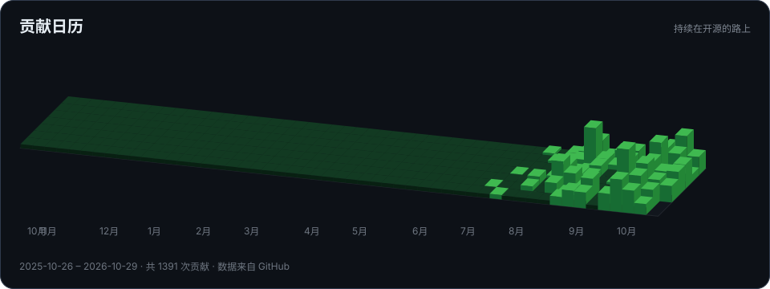

精选项目
|
为 ARM 平板适配 ArmadaOS，保留 Steam 游戏模式与 KDE 桌面，接入 kShimC 多系统启动。 |
MAA-FnOS 将 MAA 封装为飞牛原生应用，通过网页配置《明日方舟》任务、查看实时日志并设置定时运行。 |
|
牛牛牧场 · scrcpy-fnos 飞牛 fnOS 的安卓投屏与设备管理应用，在浏览器中连接真机、云手机和 redroid，集成文件管理与终端。 |
星汐 · Shio AstrBot 自然聊天增强插件，保留角色性格，结合群聊语境接话，支持连续消息等待与分段回复。 |
